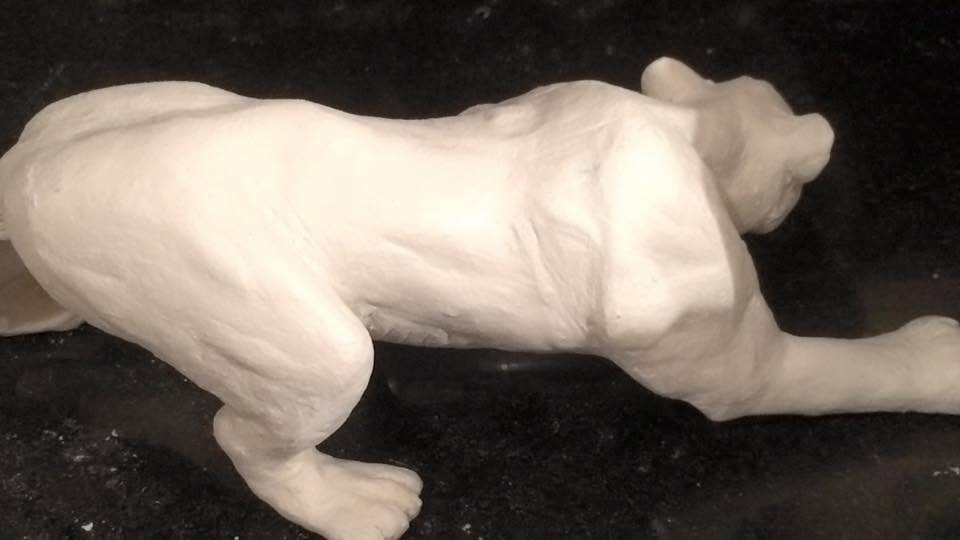
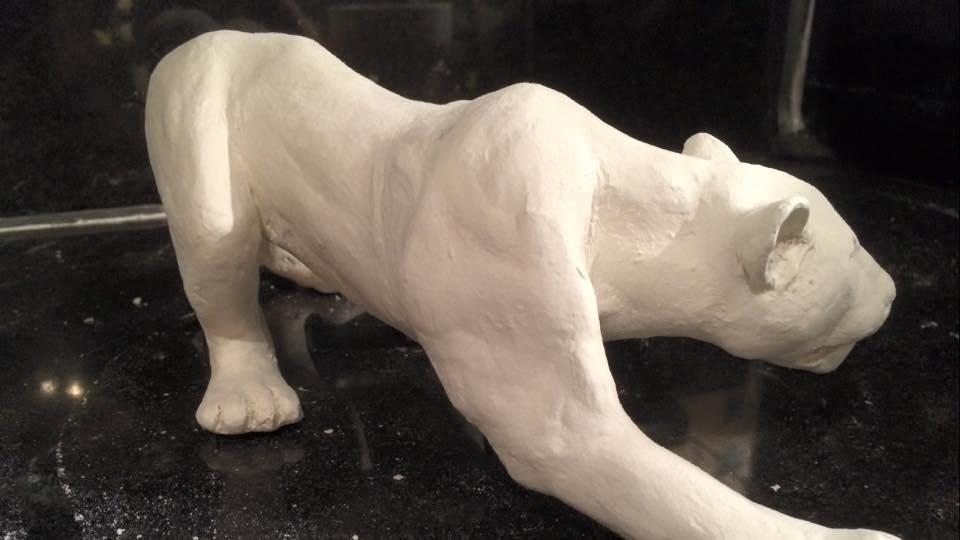
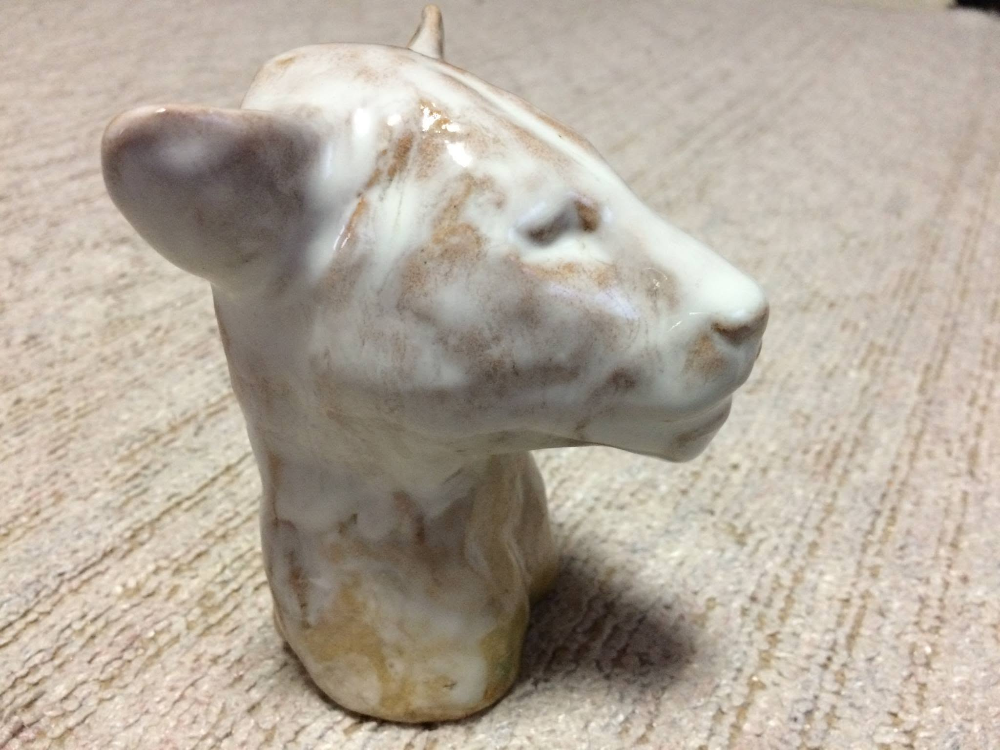

Sculpture & Models / 造形・模型の詳細アングル

肉体美の追求（背部）
野生の躍動感を伝えるため、背中から腰にかけての筋肉の盛り上がりを徹底的に追求。

狙いを定める視線
獲物を探るかのような緊張感あふれる頭部のシルエットと前足の踏ん張り。

艶やかな釉薬と彩色
滑らかな質感をまとった美しい頭部彫刻。光の反射が気高さを際立たせます。

ランチアの精密模型
激しい走行を物語るリアルなウェザリング（砂埃・汚れ表現）が施されたゼッケン539。